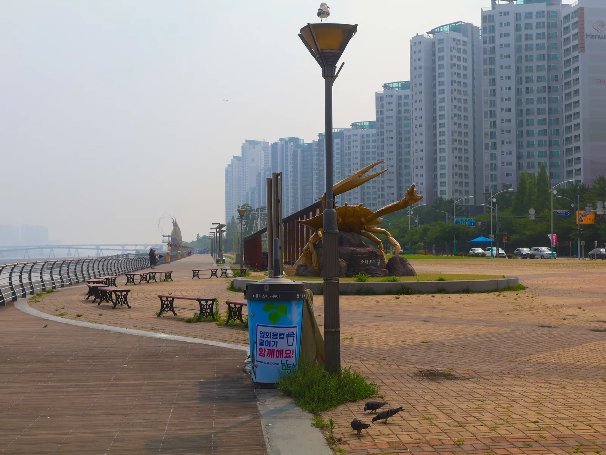
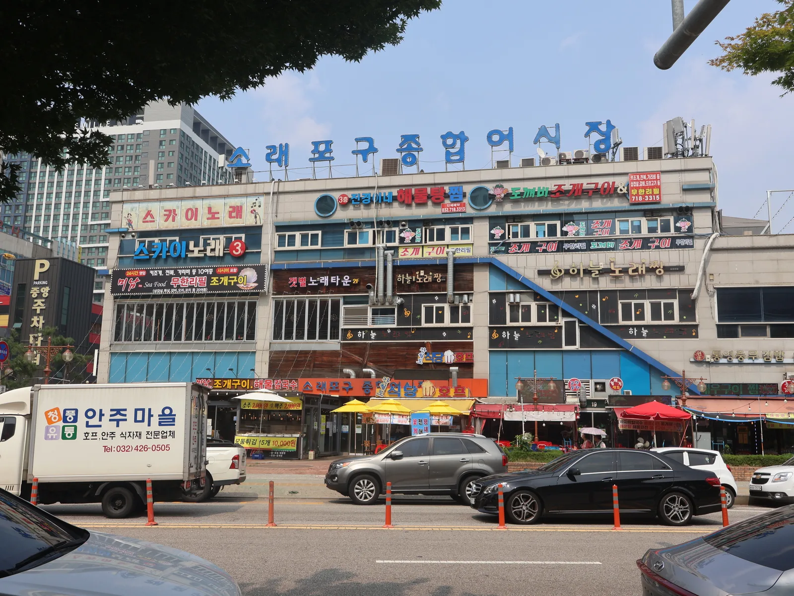
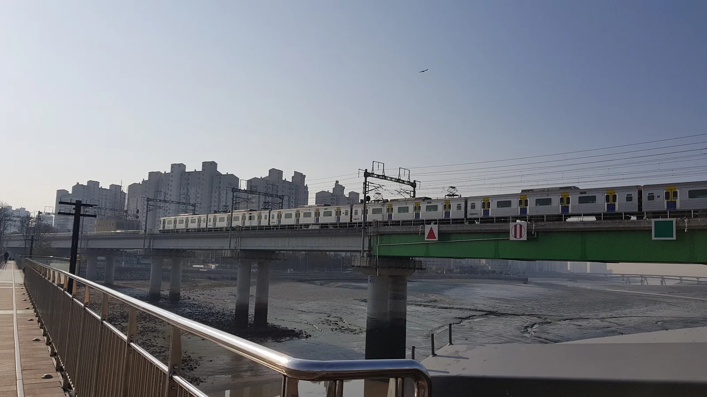
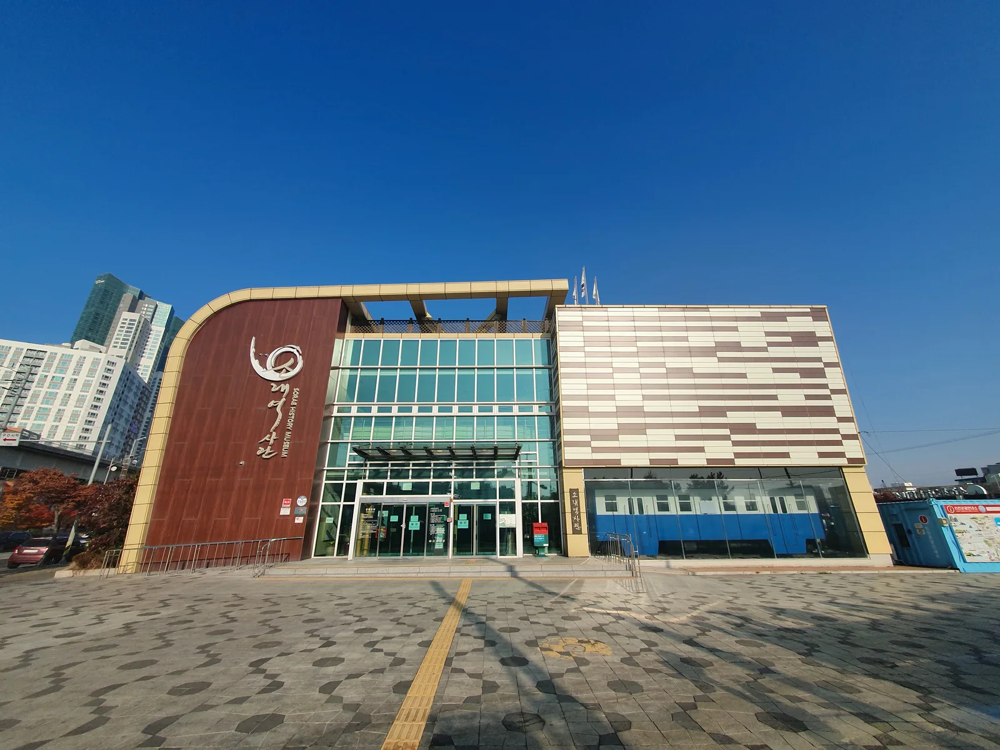
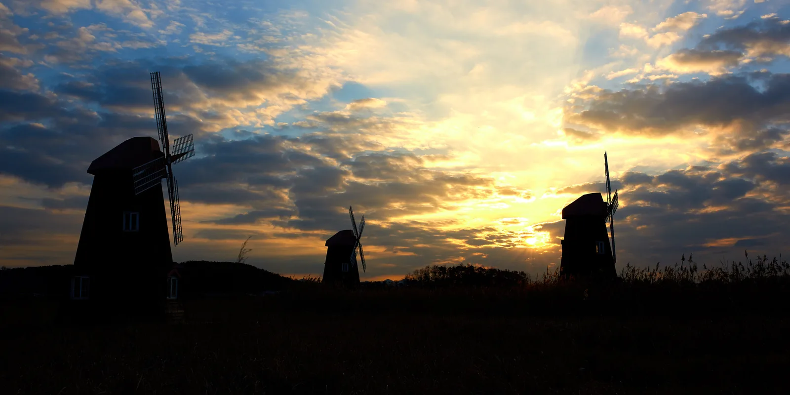
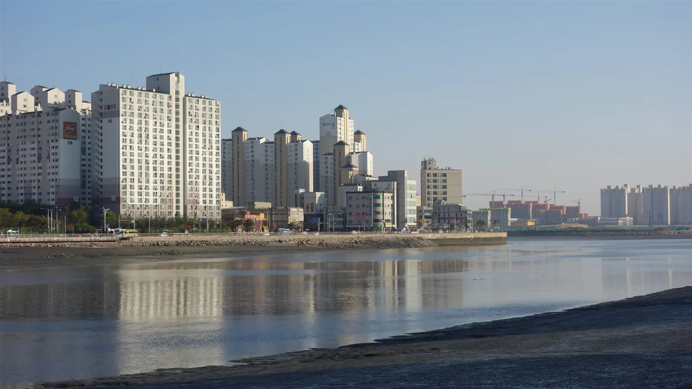

▲ 소래포구 해오름광장의 꽃게 조형물. 축제 기간이면 이 일대가 행사장으로 변신한다 ⓒ Wikimedia Commons
인천 남동구 소래포구는 원래 작은 어촌 포구였지만, 매년 가을 사흘간 소래포구축제가 열리는 시기면 전국에서 사람이 몰리는 관광지로 변신한다. 2026년으로 26회째를 맞는 이번 축제는 10월 2일부터 4일까지 해오름광장과 관광벨트 일원에서 열린다. 왜 소래포구에 유독 사람이 몰리는지는 어시장의 명물 수산물과, 한때 하루 1만~2만 명이 오가던 협궤열차의 역사를 알아야 이해가 된다. 이 기사는 2026년 축제 일정부터 명물 수산물의 제철 정보, 소래철교 역사, 가는 법과 주차, 연계 여행지까지 방문 순서대로 정리했다.
1. 제26회 소래포구축제 — 2026년 10월 2일~4일, 사흘간의 일정

▲ 소래포구종합어시장 건물 전경. 축제 기간에는 이 일대 관광벨트 전체가 행사장으로 쓰인다 ⓒ Wikimedia Commons
2026년 소래포구축제는 '소래에서 놀래'라는 슬로건으로 10월 2일(금)부터 4일(일)까지 사흘간 열린다. 장소는 소래포구 해오름광장을 중심으로 소래역사관, 장도포대터, 새우타워, 전통어시장을 잇는 관광벨트 일원이다. 입장료는 무료이며, 일부 체험 프로그램만 유료로 운영된다.
개막일인 10월 2일에는 수산물 음식 경연대회와 소래바다 퍼레이드에 이어 록밴드 크라잉넛의 개막 축하공연과 해상 불꽃쇼가 예정돼 있다. 둘째 날인 10월 3일은 시민 밴드 페스티벌과 수산물 경매, 청소년 K-POP 댄스 페스티벌, 소래바다 패션쇼, 버블 DJ 파티로 채워진다. 폐막일인 10월 4일에는 시민 합창 페스티벌과 서커스 공연에 이어 가수 백지영의 폐막 축하공연, 다시 한번 해상 불꽃쇼로 마무리된다. 이 밖에 보트 낚시, 갯벌·소금 체험, 연날리기 체험, 어린이 플리마켓 등 무료 체험 프로그램도 사흘 내내 운영된다.
| 일자 | 주요 프로그램 |
|---|---|
| 10월 2일(금·개막) | 수산물 음식 경연대회, 소래바다 퍼레이드, 크라잉넛 축하공연, 해상 불꽃쇼 |
| 10월 3일(토) | 시민 밴드 페스티벌, 수산물 경매, 청소년 K-POP 댄스 페스티벌, 소래바다 패션쇼, 버블 DJ 파티 |
| 10월 4일(일·폐막) | 시민 합창 페스티벌, 꿈의 서커스, 백지영 축하공연, 해상 불꽃쇼 |
| 상시 | 보트 낚시·갯벌·소금 체험(무료), 연날리기 체험, 어린이 플리마켓·아나바다 |
2. 소래포구 명물 수산물 — 봄 꽃게, 가을 대하, 김장철 젓갈
소래포구가 지금의 관광어촌이 되기까지는 실향민들의 사연이 있다. 광복 후 이곳에 모여든 실향민들이 무동력선 한두 척으로 새우를 잡아 젓갈을 담그고, 협궤열차를 타고 인천·수원·서울까지 새우젓을 팔러 다니며 삶을 꾸린 것이 소래포구 어시장의 뿌리다. 지금도 소래포구종합어시장에는 젓갈 가게와 건어물 상점이 줄지어 있고, 활어회·조개구이를 파는 포차 거리가 이어진다.
제철 수산물은 계절마다 다르다. 봄(5~6월)에는 살이 오른 꽃게가, 가을(9~11월)에는 통통하게 여문 대하가 어시장을 채운다. 김장철이 다가오는 늦가을에는 새우젓을 비롯한 젓갈을 사려는 발길이 몰린다. 축제가 열리는 10월 초는 마침 대하 제철과 겹치는 시기라, 축제 구경과 함께 그해 첫 가을 대하를 맛보러 오는 방문객이 많다.
| 시기 | 명물 수산물 |
|---|---|
| 봄(5~6월) | 꽃게 — 살이 가장 많이 오르는 시기 |
| 가을(9~11월) | 대하 — 통통하게 여문 햇대하가 나오는 시기, 축제 기간과 겹침 |
| 늦가을~김장철 | 새우젓 등 젓갈 — 김장용 젓갈 구매 수요가 몰리는 시기 |
3. 소래철교와 협궤열차 — 하루 2만 명이 오가던 시절

▲ 소래철교 인근 갯벌 위를 지나는 수인선 전동열차. 이 자리엔 원래 협궤열차가 다니던 옛 철교가 있었다 ⓒ Wikimedia Commons
소래포구를 이해하려면 소래철교를 빼놓을 수 없다. 길이 126.5m의 소래철교는 1937년 개통돼 일제강점기 소금 수송을 위해 수원과 인천을 잇던 수인선 협궤열차가 지나던 다리였다. 1970년대 이후 소래포구가 관광어촌으로 각광받으면서 한때 하루 왕복 10회, 이용객 1만~2만 명에 이를 정도로 성황을 이뤘다. 하지만 협궤열차는 1994년까지 이 철교를 이용하다 1995년 12월 31일을 끝으로 운행을 마쳤고, 철교는 역사적 보존 가치를 인정받아 1997년 인도교로 개조돼 지금은 도보로 건널 수 있는 명소가 됐다. 2012년 6월에는 표준궤로 새로 놓인 수인선이 개통해, 옛 철교 옆 새 다리로 전동열차가 다니고 있다.

▲ 협궤열차와 소래포구의 역사를 전시하는 소래역사관. 옛 열차 차량 일부가 야외에 전시돼 있다 ⓒ Wikimedia Commons
협궤열차의 흔적은 소래역사관에서 확인할 수 있다. 2012년 문을 연 이 역사관은 옛 수인선 노선도와 협궤열차 모형, 실향민들이 새우젓을 팔던 시절의 어시장 미니어처 등을 전시해 소래포구가 걸어온 길을 보여준다. 축제 기간에는 역사관 인근도 관광벨트에 포함돼 있어, 공연과 체험 사이 짬을 내 들르기 좋다.
4. 가는 법·주차 — 축제 기간엔 대중교통이 편하다
소래포구는 수인분당선 소래포구역에서 내려 행사장 방향으로 도보 약 10분이면 닿는다. 서울에서도 지하철로 환승 없이 접근할 수 있어 축제 기간에는 자가용보다 대중교통을 이용하는 편이 훨씬 수월하다. 실제로 축제 기간 중 인근 도로는 교통 통제가 이뤄지는 구간이 있어, 자가용 방문객은 사전에 통제 구간과 임시 주차장 위치를 확인해 두는 것이 좋다. 평상시에는 소래포구 주변 공영 주차장과 어시장 부설 주차장을 이용할 수 있지만, 축제 기간에는 방문객이 몰리는 만큼 대중교통 이용이 권장된다.
| 항목 | 내용 |
|---|---|
| 대중교통 | 수인분당선 소래포구역 하차 후 도보 약 10분 |
| 축제 기간 교통 | 행사장 인근 구간 교통 통제, 대중교통 이용 권장 |
| 평상시 주차 | 소래포구 인근 공영 주차장·어시장 부설 주차장 |
| 위치 | 인천광역시 남동구 소래포구 일원 |
5. 연계 여행지 — 소래습지생태공원과 소래철교 산책로

▲ 소래습지생태공원의 상징인 풍차. 옛 염전 자리에 조성된 공원으로, 노을 무렵 갈대밭과 어우러진 풍경이 유명하다 ⓒ Wikimedia Commons
소래포구에서 도보로 이어지는 소래습지생태공원은 옛 염전 자리에 조성된 생태공원이다. 1999년 66만㎡ 규모로 처음 문을 연 뒤 몇 차례 확장을 거쳐 2009년 약 156만㎡ 규모로 지금의 모습을 갖췄다. 갈대밭 사이에 서 있는 풍차 세 채가 공원의 상징으로, 특히 노을이 질 무렵 갈대와 풍차가 어우러지는 풍경을 보러 오는 방문객이 많다. 옛 소금 창고를 개조한 생태전시관에서는 습지에 사는 동식물과 천일염 생산 과정을 함께 볼 수 있다.

▲ 소래포구 건너편으로 보이는 시흥 월곶 일대. 물이 빠지면 넓은 갯벌이 드러난다 ⓒ Wikimedia Commons
소래철교를 걸어서 건너면 물 건너 시흥 월곶 쪽으로 이어지는 산책로와도 연결된다. 물때에 따라 갯벌이 넓게 드러나는 풍경을 볼 수 있어, 축제 구경 후 늦은 오후에는 철교를 건너 월곶 방향으로 산책을 이어가는 코스도 추천할 만하다. 공원 이용시간은 통상 04:00~23:00이며, 산책로와 생태전시관은 별도 운영시간이 있으니 방문 전 확인이 필요하다.
인천광역시 공원 홈페이지에서 소래습지생태공원 이용 정보 확인 가능✅ 인천 소래포구축제 2026, 가기 전 체크리스트
· 제26회 소래포구축제, 2026년 10월 2일(금)~4일(일) 3일간, 해오름광장 등 관광벨트 일원
· 개막일 크라잉넛, 폐막일 백지영 공연 및 해상 불꽃쇼, 입장료 무료(일부 체험 유료)
· 소래포구 명물 수산물은 봄(5~6월) 꽃게, 가을(9~11월) 대하, 늦가을 젓갈
· 소래철교는 1937년 개통, 1995년 협궤열차 운행 종료 후 1997년 인도교로 개조
· 소래역사관에서 협궤열차·어시장 역사 전시 관람 가능
· 수인분당선 소래포구역 하차 후 도보 약 10분, 축제 기간 대중교통 권장
· 연계 코스로 소래습지생태공원(풍차·갈대밭)과 월곶 방향 산책로 추천